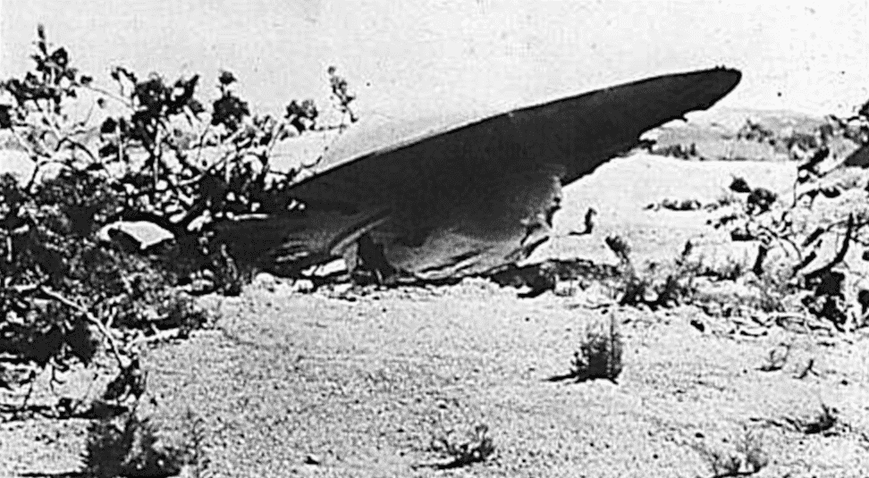

Talvez a teoria da conspiração mais conhecida seja a de que a Área 51 abrigava uma espaçonave alienígena que supostamente caiu em Roswell, no Novo México, em 1947, junto com os corpos dos pilotos.
Uma das histórias que caminha na linha das teorias da conspiração é a do Disco Voador de Roswell. No final da década de 1940, um objeto não identificado caiu em uma fazenda da cidade de Roswell, no estado do Novo México (EUA). Tão logo que o objeto colidiu, o Roswell Army Air Field — as forças armadas da cidade — chegou para coletá-lo. Pouco tempo depois, os militares informaram que não se tratava de nada além de um balão metereológico e o assunto foi dado como ''encerrado''. As pessoas que moravam na cidade, no entanto, começaram a dar depoimentos diferentes: muitos moradores afirmavam que viram os oficiais do Roswell Army Air Field retirarem um disco voador do campo em que o suposto balão havia caído. Outros insistiram que haviam visto a retirada de corpos de ETs. Até hoje, uma porcentagem considerável de norte-americanos acredita que aquele foi um dos primeiros contatos que o governo americano teve com alienígenas. Uma pesquisa realizada pela CNN/Time (parceria entre os dois veículos), realizada em 1997, mostrava que dois terços dos entrevistados acreditavam que o encontro era marcado pela presença de ETs.
Suposto OVNI era, na verdade, partes de balões, sensores e refletores de radar dos destroços de um projeto secreto do governo destinado a “determinar o estado da pesquisa soviética de armas nucleares”, de acordo com um relatório da Força Aérea de 1994.
